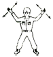
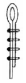
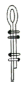
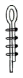
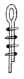
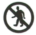

천장크레인운전기능사 (2011-10-09 기출문제)
1과목: 임의 구분
1. 주행차륜 좌우측 중심 간의 수평거리에 해당되는 것은?
- 차륜하중(Wheel Load)
- 휠베이스(Wheel Base)
- 트롤리 스팬(Trolley Span)
- 양정(Lift)
(정답률: 32%)

2. 천장크레인에 전혀 사용되지 않는 브레이크는?
- 직류전자 브레이크
- 교류전자 브레이크
- 스러스트 브레이크
- 공압 브레이크
(정답률: 75%)
3. 천장크레인 주행레일 연결부 어긋남의 허용오차는 상·하, 좌·우로 얼마인가?
- 0.1㎜
- 0.5㎜
- 0.1㎝
- 0.5㎝
(정답률: 69%)
4. 크레인에서 횡행속도가 얼마 이상일 경우 횡행레일의 차륜 정지기구에 리미트 스위치 등 전기적 정지장치를 설치하여야 하는가?
- 20m/min 이상
- 32m/min 이상
- 40m/min 이상
- 48m/min 이상
(정답률: 46%)
5. 주행차륜의 직경이 40㎜이고, 주행모터의 회전수가 3,000rpm이며 감속비가 1/100일 때 이 천장크레인의 주행속도는? (단, 마찰저항은 무시)
- 약 12m/min
- 약 30m/min
- 약 38m/min
- 약 120m/min
(정답률: 52%)
6. 제한 개폐기(Limit Switch)의 종류와 가장 거리가 먼 것은?
- 나사(Screw)형 제한 개폐기
- 레버(Lever)형 제한 개폐기
- 로드(Rod)형 제한 개폐기
- 캠(Cam)형 제한 개폐기
(정답률: 55%)
7. 천장크레인에서 시브 홈의 마모한도는 사용하는 와이어로프 지름의 몇 % 이내로 하고 있는가?
- 5%
- 10%
- 15%
- 20%
(정답률: 30%)
8. 크레인용 훅(Hook)에 대한 설명으로 틀린 것은?
- 하중을 걸어 시험할 때에는 정격하중의 250%를 걸어 테스트한다.
- 국부마모는 원 치수의 5% 이내이어야 한다.
- 해지장치는 균열, 변형 등이 없어야 한다.
- 훅 본체는 균열 또는 변형이 없어야 한다.
(정답률: 80%)
9. 작동식 권과 방지장치에서 훅 블록과 트롤리 프레임과의 간격이 일정 이상 확보되지 않을 경우, 발생할 수 있는 사고와 가장 거리가 먼 것은?
- 와이어로프 절단
- 훅 블록이나 프레임의 파손
- 인양물의 낙하
- 리미트 스위치의 수명 저하
(정답률: 71%)
10. 홈이 있는 드럼에 와이어로프가 감길 때 와이어로프 방향과 홈 방향과의 각도는 몇 도 이내인가?
- 4
- 8
- 12
- 16
(정답률: 70%)
11. 새들에 대한 설명 중 틀린 것은?
- 새들에는 주행차륜을 설치한다.
- 새들 양끝에는 주행 완충용 스톱퍼를 설치한다.
- 새들 좌·우 외측차륜의 중심간 거리는 베이스이다.
- 일반적으로 거더 위에 새들을 얹어 체결한다.
(정답률: 50%)
12. 천장크레인에서 훅(Hook)을 사용할 수 없는 상태는?
- 와이어가 닿는 부분의 마모깊이가 1㎜가 되었을 때
- 훅 국부의 마모가 원 치수의 3%가 되었을 때
- 훅 입구의 벌어짐이 원 치수의 20%가 넘었을 때
- 훅의 일부분에서 도장이 벗겨졌을 때
(정답률: 83%)
13. 천장크레인과 관련된 설명 중 틀린 것은?
- 휠베이스는 스팬 길이의 8배 이상이 되어야 좋다.
- 크랩이란 횡행장치를 설치하여 양 거더 위에 설치된 레일 위를 왕복 운동하는 대차이다.
- 시징은 와이어 직경의 3배 정도를 해야 한다.
- 천장크레인의 와이어 고정시에 쐐기고정과 클립고정을 병용해서 사용하는 것이 좋다.
(정답률: 52%)
14. 천장크레인에서 와이어로프가 드럼에 감길 때 홈이 없는 경우 플리트(Fleet) 각도는 얼마가 좋은가?
- 2° 이내
- 4° 이내
- 15° 이내
- 30° 이내
(정답률: 65%)
15. 전자 브레이크의 라이닝이 마모되었을 때 일어나는 현상으로 틀린 것은?
- 풀리와 라이닝의 틈새가 커진다.
- 플런저의 스트로크가 커진다.
- 라이닝이 발열할 염려가 있다.
- 전자석이 소손된다.
(정답률: 47%)
16. 천장크레인 규격 표시 60/20×42m에서 60/20은?
- 주권 60톤, 보권 20톤
- 보권 60톤, 주권 20톤
- Span 60m, 양정 20m
- 양정 60m, Span 20m
(정답률: 79%)
17. 중추식 리미트 스위치의 주된 역할은?
- 권하시 상용 권과방지
- 권상시 상용 작동유지
- 주행 또는 횡행 작동시 양정을 초과하는 작업방지
- 권상시 비상용 권과방지
(정답률: 60%)
18. 브레이크 중에서 전기를 투입하여 유압으로 작동되는 것은?
- 마그넷 브레이크
- 오일디스크 브레이크
- 스러스트 브레이크
- 다이나믹 브레이크
(정답률: 68%)
19. 천장크레인에 대한 용어 설명으로 가장 적합한 것은?
- 주행레일 위에 설치된 교각에 의해 지지되는 거더가 있는 크레인이다.
- 주행레일 위에 설치된 새들에 직접적으로 지지되는 거더가 있는 크레인이다.
- 상당량의 짐을 인력으로 달아 올리기 및 이동시키는데 사용되는 공구의 일종이다.
- 엔진의 힘으로 무거운 짐을 간편하게 옮길 수 있는 크레인이다.
(정답률: 68%)
20. 천장크레인의 시험하중은 정격하중의 몇 %인가?
- 70%
- 110%
- 135%
- 200%
(정답률: 89%)
2과목: 임의 구분
21. 천장크레인 점검 보수작업 중 감전사고가 발생하였다. 조치 방법으로 틀린 것은?
- 즉시 전원을 차단한다.
- 즉시 피해자를 잡아당겨 접촉물로부터 분리시킨다.
- 감전되어 인사불성에 빠지더라도 전원 차단 후 인공호흡을 실시한다.
- 전원을 차단하기 어려운 경우에는 마른 헝겊이나 플라스틱 등 절연물을 이용하여 접촉물을 제거한다.
(정답률: 81%)
22. 축 이음부에 합성고무, 가죽 등을 사용하여 축의 진동을 방지하며 경사각을 3~5° 이내로 하는 축이음은?
- 플렉시블 커플링
- 플랜지 커플링
- 기어 커플링
- 유니버셜 조인트
(정답률: 42%)
23. 천장크레인의 패널(Panel)중에서 가장 사용률이 높은 것은?
- 권상 패널
- 횡행 패널
- 주행 패널
- 보호 패널
(정답률: 32%)
24. 스플라인의 특징이 아닌 것은?
- 큰 토크를 전달할 수 있다.
- 큰 하중의 권상 드럼에 쓰인다.
- 내구력이 작다.
- 축과 보스의 중심축을 정확하게 맞출 수 있다.
(정답률: 67%)
25. 전기 스파크 발생의 설명으로 틀린 것은?
- 전기스위치를 차단할 때보다 연결할 때 많이 일어난다.
- 교류보다 직류에서 많다.
- 전압이 높을수록 심하다.
- 접촉면의 요철이 심할수록 잘 일어난다.
(정답률: 60%)
26. 천장크레인의 조작방법 중 틀린 것은?
- 크레인의 콘트롤러의 작동종류 방향과 일치하는 표시를 하여야 하며 정해진 작동위치가 아닌 중간 위치에도 작동되도록 한다.
- 주행과 횡행이 천천히 안전을 확인한 후 출발하여야 한다.
- 권상권하 콘트롤은 중립위치에서는 하물이 정지하여야 한다.
- 운전자는 신호수의 신호에 따라 운전하여야 한다.
(정답률: 83%)
27. 사용 중인 천장크레인은 산업안전보건법 관련에 따라 주기적인 점검 및 검사를 실시하여야 한다. 다음 중 관계가 없는 것은?
- 안전검사
- 자율안전프로그램에 의한 검사
- 작업시작 전 점검
- 완성검사
(정답률: 70%)
28. 선로 및 전기 기기를 보호해주는 계전기에서 과전류가 흐를때 자동적으로 선로를 차단시키는 계전기는?
- 과전압 계전기
- 과전류 계전기
- 부족전압 계전기
- 부족전류 계전기
(정답률: 91%)
29. 집중 윤활장치를 설명한 것으로 틀린 것은?
- 정기적으로 급유함으로써 과잉, 과소, 급유 누락 등을 해결한다.
- 단시간 내에 확실한 급유가 되므로 능률적이다.
- 분배변의 각 배유구마다 유량조절이 불가하여 낭비가 심하다.
- 기계의 운전 중이라도 안전하게 급유할 수 있다.
(정답률: 69%)
30. 다음 설명 중 옳은 것은?
- 스핀들은 주로 자동차에 사용된다.
- 플랜지 이음은 지름이 큰 축 또는 휘기 쉬운 축에 적당하다.
- 슬립 이음은 원통 속에 두 축을 넣어 용접한 것이다.
- 플렉시블 이음은 두 축의 중심선이 정확히 일치하기 곤란한 곳에 사용한다.
(정답률: 55%)
31. 구름 베어링의 그리스 윤활시 베어링 전체공간을 충진하고 하우징 공간의 1/3 정도 충진하면 약 몇 시간 사용 가능한가?
- 20,000h
- 2,000h
- 40,000h
- 4,000h
(정답률: 68%)
32. 볼트에서 메트릭나사의 나사산 각도는 몇 도인가?
- 45
- 55
- 60
- 80
(정답률: 49%)
33. 천장크레인 배선 중 알맞은 것은?
- R.S.T.A
- R.S.T.E
- R.E.S.T
- T.S.R.E
(정답률: 81%)
34. 운전 중 전동기에 전원이 인가되지 않아 정지되었을 때 가장 먼저 점검하여야 할 것은?
- 과부하 계전기 동작 유무 확인
- 집전기 이탈 상태 확인
- 배선상태 확인
- 브레이크 동작 상태 확인
(정답률: 78%)
35. 짐을 권상시킬 때의 운전 방법 중 가장 양호한 것은?
- 정격하중 이상의 부하를 걸어야 권상할 수 있다.
- 짐을 조금씩 들어올리고 그때마다 제어기를 off시켜 브레이크의 지지능력을 확인한다.
- 지면에서 20㎝쯤 위치에서 일단 정지하고 줄걸이 상태를 확인하고 계속 들어 올린다.
- 안전을 위하여 작업을 하지 않는다.
(정답률: 81%)
36. 천장크레인의 전동기는 그 사용 빈도에 따라 사용률 정격(%ED)으로 표시한다. 사용률 정격을 구하는 식은?
- (정지시간 / 운전시간) × 100
- (운전시간 / 정지시간) × 100
- (운전시간 / (운전시간+정지시간)) × 100
- (정지시간 / (운전시간+정지시간)) × 100
(정답률: 58%)
37. 절연 종류 중 가장 높은 온도 상승에 견딜 수 있는 것은?
- A종
- B종
- E종
- F종
(정답률: 57%)
38. 안전운행에 관한 설명 중 틀린 것은?
- 규정수전전압이 90%에서 운전하고 그 이상이 넘지 않도록 한다.
- 위험물을 운반할 때는 사이렌을 연속적으로 작동하여야 한다.
- 신호수의 신호에 의하여 운전해야 한다. 단, 비상시 급정지 시는 그렇지 않다.
- 마그넷 크레인 운전시 정전이 되면 운반물을 3분 이내에 안전한 장소에 권하하고 각 컨트롤러를 중립위치로 하고 주 전원을 차단한다.
(정답률: 53%)
39. 두 축이 서로 직접 교차하여 맞물려 돌아가는 기어는?
- 평 기어
- 내접기어
- 더블헬리컬 기어
- 베벨 기어
(정답률: 73%)
40. 크레인의 점검 및 정비시 안전대책을 열거하였다. 해당되지 않는 것은?
- 인접 크레인과의 충돌을 방지하기 위해 주행레일에 임시 스토퍼를 설치한다.
- 크레인에 수리 중 표지판을 부착한다.
- 전원 스위치를 동작위치로 하여야 한다.
- 크레인 수리공사 범위는 위험구역임을 표시하고 출입금지 조치를 한다.
(정답률: 82%)
3과목: 임의 구분
41. 그림과 같이 양손의 손바닥을 앞으로 하여 머리 위에 올려 급히 좌우로 2~3회 흔드는 작업신호는?

- 호출
- 신호 불명
- 비상정지
- 작업완료
(정답률: 80%)
42. 권상용 체인에 균열이 발생하였을 때의 사용여부는?
- 용접하여 사용할 수 있다.
- 사용할 수 없다.
- 불가피한 경우에는 사용할 수 있다.
- 일반적으로 미세한 균열은 용접하여 사용이 가능하다.
(정답률: 68%)
43. 샤클에 각인된 SWL의 의미는?
- 안전작업하중
- 제작회사의 마크
- 절단하중
- 재질
(정답률: 56%)
44. 와이어로프에서 킹크가 발생될 경우 파단하중 감소율은 어느 정도인가?
- 10%
- 15%
- 20%
- 40%
(정답률: 15%)
45. 줄걸이 용구의 안전계수를 나타낸 공식은?
- 안전계수 = 절단하중 / 안전하중
- 안전계수 = 허용응력 / 극한강도
- 안전계수 = 극한강도 / 절단하중
- 안전계수 = 허용하중 / 절단하중
(정답률: 62%)
46. 크레인에 사용하는 와이어로프 중 안전율이 다른 것은?
- 권상용 와이어로프
- 지브의 기복용 와이어로프
- 횡행용 와이어로프
- 케이블 크레인의 주 로프
(정답률: 30%)
47. 공칭인장 강도가 165kgf/mm2 급으로 크레인에서 사용빈도가 아주 많은 와이어로프의 종류로 맞는 것은?
- A종
- B종
- BG종
- C종
(정답률: 29%)
48. 타워크레인에서 일반적인 작업사항으로 틀린 것은?
- 작업이 종료된 후 훅(Hook)은 크레인 메인 지브의 하단부정도까지 올려놓는다.
- 물건을 운반하지 않을 때는 훅에 와이어를 건 체로 이동해서는 안 된다.
- 모가 난 짐을 운반시는 규정보다 약한 와이어를 사용한다.
- 화물의 중량 및 중심의 목측(目測)은 가능한한 정확히 해야 한다.
(정답률: 80%)
49. 신호법 중 오른손으로 왼손을 감싸 2~3회 적게 흔드는 작업신호는?
- 신호불명
- 기다려라
- 천천히 이동
- 크레인 이상 발생
(정답률: 39%)
50. 클립(Clip) 고정이 가장 적합하게 된 것은?




(정답률: 60%)
51. 볼트 등을 조일 때 조이는 힘을 측정하기 위하여 쓰는 렌치는?
- 복스 렌치
- 오픈엔드 렌치
- 소켓 렌치
- 토크 렌치
(정답률: 71%)
52. 크레인으로 무거운 물건을 위로 달아 올릴 때 주의할 점이 아닌 것은?
- 달아 올릴 화물의 무게를 파악하여 제한하중 이하에서 작업한다.
- 매달린 화물이 불안전하다고 생각될 때는 작업을 중지한다.
- 신호의 규정이 없으므로 작업자가 적절히 한다.
- 신호자의 신호에 따라 작업한다.
(정답률: 84%)
53. 전기장치의 퓨즈가 끊어져서 다시 새것으로 교체 하였으나 또 끊어졌다면 어떤 조치가 가장 옳은가?
- 계속 교체한다.
- 용량이 큰 것으로 갈아 끼운다.
- 구리선이나 납선으로 바꾼다.
- 전기장치의 고장개소를 찾아 수리한다.
(정답률: 65%)
54. 산업안전 보건표지에서 그림이 나타내는 것은?

- 비상구 없음 표지
- 방사선위험 표지
- 탑승금지 표지
- 보행금지 표지
(정답률: 87%)
55. 가동하고 있는 엔진에서 화재가 발생하였다. 불을 끄기 위한 조치 방법으로 가장 올바른 것은?
- 원인분석을 하고, 모래를 뿌린다.
- 거품 소화기를 사용 후, 엔진 시동스위치를 끈다.
- 엔진 시동스위치를 끄고, ABC 소화기를 사용한다.
- 엔진을 급가속 하여 팬의 강한 바람의 일으켜 불을 끈다.
(정답률: 79%)
56. 동력 전달장치에서 가장 재해가 많이 발생하는 것은?
- 차축
- 기어
- 피스톤
- 벨트
(정답률: 72%)
57. 크레인으로 인양시 물체의 중심을 측정하여 인양하여야 한다. 다음 중 잘못된 것은?
- 형상이 복잡한 물체의 무게 중심을 확인한다.
- 인양 물체를 서서히 올려 지상 약 30㎝ 지점에서 정지하여 확인한다.
- 인양 물체의 중심이 높으면 물체가 기울 수 있다.
- 와이어로프나 매달기용 체인이 벗겨질 우려가 있으면 되도록 높이 인양한다.
(정답률: 77%)
58. 구급처치 중에서 환자의 상태를 확인하는 사항과 거리가 먼 것은?
- 의식
- 상처
- 출혈
- 격리
(정답률: 88%)
59. 작업장에서 전기가 예고 없이 정전되었을 경우 전기로 작동하던 기계기구의 조치방법으로 틀린 것은?
- 즉시 스위치를 끈다.
- 안전을 위해 작업장을 정리해 놓는다.
- 퓨즈의 단선 유무를 검사한다.
- 전기가 들어오는 것을 알기 위해 스위치를 켜 둔다.
(정답률: 79%)
60. 복스 렌치가 오픈 렌치보다 많이 사용되는 이유는?
- 값이 싸며 적은 힘으로 작업할 수 있다.
- 가볍고 사용하는데 양손으로도 사용할 수 있다.
- 파이프 피팅 조임 등 작업용도가 다양하며 많이 사용된다.
- 볼트, 너트 주위를 완전히 감싸게 되어 사용 중에 미끄러지지 않는다.
(정답률: 66%)